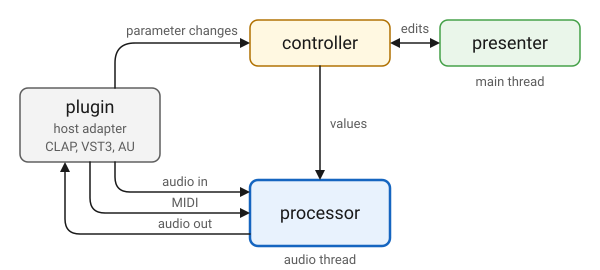
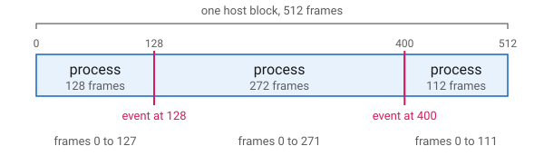
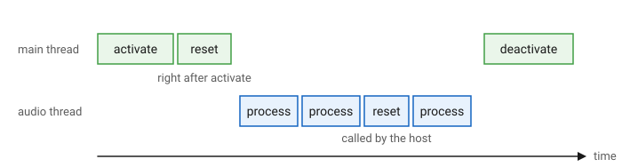

Processor
Overview
A processor does a plugin’s audio work: it takes the audio and the MIDI the host sends and produces the plugin’s output. The rest of the plugin supports it. The controller holds the parameter values it reads, the presenter edits those values, and the host adapter delivers the audio and MIDI to the processor and the parameter changes to the controller.

The processor runs on the audio thread, where it must not block or allocate, and QPlug keeps everything that concerns the host out of its way. A processor reads audio, parameter values and MIDI, and writes samples. It sees no plugin format, no lock and no host event list.
It is a Q audio_stream_base, and process(in, out) is the same call a Q
program gets from an audio device, over the same multi_buffer channels.
DSP written for Q moves into a plugin as it is: the va_synth examples are
Q’s poly_synth example with a plugin around it, and the voice and the
voice pool are the same code.
An effect is not much more than its DSP. This is the whole of the gain
example’s processor:
class gain_processor : public qplug::processor
{
public:
gain_processor(gain_controller& ctl);
channel_config channels() const override { return {1, 1}; }
void activate() override;
void reset() override;
void process(
in_channels const& in
, out_channels const& out) override;
private:
float gain() const;
gain_controller& _ctl;
q::one_pole_lowpass _gain_lp{0.0f};
};It says which channels it runs in, sets up what depends on the sample rate
in activate, clears its state in reset, and does its work in process.
It reads its parameters from the controller it was made with, as the types
they were declared with: see parameter. What QPlug does around those few
functions is what lets them stay this simple:
- Timing
-
Parameter changes and MIDI messages land on the frame the host stamped them with, not at the start of the block. See Events at the Sample.
- Threads
-
A parameter is an atomic value the audio thread reads without waiting. Edits made in the editor go out to the host from the audio thread only when that takes no wait, so the processor never blocks on the user interface.
- Formats and dialects
-
The same processor runs as a CLAP, a VST3 and an AudioUnit. A
midi_processorreceives MIDI as MIDI 2.0 messages whether the host sent MIDI 1.0, MIDI 2.0 or CLAP’s own note events.
The work is split between two threads. activate and deactivate are
called on the main thread. reset, process and midi are called on the
audio thread, where nothing may block or allocate.
Events at the Sample
The host hands the plugin a block of frames together with the events that
happen during it, parameter changes and MIDI, each stamped with its frame.
QPlug does not apply them all at the start of the block. It cuts the block
where the events fall, applies the events at each cut, and calls process
once for each run of frames between the cuts. For a block of 512 frames with
events at frames 128 and 400, the processor sees:

Each call’s buffers begin at the first frame of its run, so a processor counts
its frames from 0 and never needs to know the block was cut. Reading a
parameter once, at the top of process, is enough: the value is the one in
force for every frame of that call. The gain example does exactly that:
void gain_processor::process(in_channels const& in, out_channels const& out)
{
auto target = gain();
auto frames = in.frames.size();
for (std::size_t f = 0; f != frames; ++f)
{
auto g = _gain_lp(target);
for (std::size_t ch = 0; ch != in.size(); ++ch)
out[ch].begin()[f] = in[ch].begin()[f] * g;
}
}A few cases follow from cutting the block at its events:
-
Several events stamped with the same frame make one cut. They are all applied there, and
processis never called with zero frames. -
An event at frame 0 is applied before the first call, so the whole block hears it.
-
An event stamped at or past the end of the block is not dropped. It is applied after the last call, so it takes effect from the start of the next block.
Declaration
struct channel_config
{
std::uint32_t inputs;
std::uint32_t outputs;
};
class processor : public q::audio_stream_base
{
public:
using channel_config = cycfi::qplug::channel_config;
// From q::audio_stream_base
using in_channels = q::multi_buffer<float const>;
using out_channels = q::multi_buffer<float>;
virtual channel_config channels() const;
std::uint32_t sps() const;
std::uint32_t max_frames() const;
virtual void activate();
virtual void deactivate();
virtual void reset();
// From q::audio_stream_base
virtual void process(in_channels const& in
, out_channels const& out);
virtual bool has_midi_input() const;
virtual void midi(q::midi_1_0::raw_message, std::size_t);
virtual void midi(q::midi_2_0::packet const&, std::size_t);
};
using processor_ptr = std::unique_ptr<processor>;Expressions
Notation
proc-
Object of a type derived from
processor. in-
Object of type
processor::in_channels. out-
Object of type
processor::out_channels. msg-
Object of type
q::midi_1_0::raw_message. pkt-
Object of type
q::midi_2_0::packet. time-
A
std::size_t, a frame in the host’s block.
Channel Layout
| Expression | Semantics | Return Type |
|---|---|---|
|
The number of input and output channels. Stereo in and stereo out unless overridden. |
|
A plugin has one channel layout, on one main port each way. The host is told a port of one channel is mono and a port of two is stereo; more than two have no spatial meaning to it. A side with no channels has no port at all, which is how an instrument is declared:
// An instrument: no audio in, stereo out.
channel_config channels() const override { return {0, 2}; }Stream
| Expression | Semantics | Return Type |
|---|---|---|
|
The sample rate the host activated the plugin at, in samples per second. |
|
|
The most frames a call to |
|
Both are set before activate is called, and hold until the plugin is
activated again.
Life Cycle
| Expression | Semantics |
|---|---|
|
Called on the main thread when the host activates the plugin. Build and size whatever depends on the stream here. |
|
Called on the main thread when the host deactivates the plugin. |
|
Take up the current stream and clear any
state carried over. Called right after
|

All three do nothing unless overridden. The delay example builds its
delay line in activate, where the sample rate is known, and clears it in
reset:
void delay_processor::activate()
{
_delay = q::delay{delay_controller::max_delay, float(sps())};
_delay_lp.cutoff(smoothing, sps());
}
void delay_processor::reset()
{
_delay.clear();
_delay_lp = delay_samples();
}
reset runs on the audio thread when the host calls it, so it must
not block or allocate. Allocate in activate.
|
Function Call
| Expression | Semantics |
|---|---|
|
Process one run of frames from the
host’s block, reading |
in and out are Q multi_buffer channels. size() is the number of
channels, frames is the range of frame indices, starting at 0, and
out[ch] is one channel’s samples. An instrument’s in has no channels.
Of the three process overloads audio_stream_base declares, QPlug calls
only this one, so an instrument overrides it too and leaves in unread.
MIDI
| Expression | Semantics | Return Type |
|---|---|---|
|
Whether the processor takes MIDI. The host offers it a note port only when it does. False unless overridden. |
|
|
A MIDI 1.0 message from the host, on the audio thread. |
|
|
A MIDI 2.0 packet from the host, on the audio thread. |
|
A processor that takes MIDI does not override these. It derives from MIDI, which does, and hands every message to Q overloads as MIDI 2.0, whichever dialect the host sent.
This is how MIDI is sample accurate without a processor scheduling anything.
The adapter calls midi at the cut for the message’s frame, as
Events at the Sample describes, and the next call to process starts on
that frame. A processor acts on a message as soon as it arrives. The
va_synth_1 example starts a voice when a note-on comes in, and ignores
time:
void va_synth_processor::operator()(midi::note_on msg, std::size_t)
{
// Sixteen bits. A MIDI 1.0 note on of zero velocity never gets here:
// the translation makes it the note off MIDI 1.0 means by it.
note_on(msg.key(), float(msg.velocity()) / 65535);
}void va_synth_processor::note_on(std::uint8_t key, float velocity)
{
allocate(key).on(q::midi_1_0::note_frequency(key), sensed(velocity));
}Its process then renders every active voice from the first frame of the
run, and for a voice just started, that frame is the note’s frame:
void va_synth_processor::process(in_channels const& /*in*/
, out_channels const& out)
{
update_envelopes();
auto const volume = q::lin_float(_ctl.volume());
auto left = out[0];
auto right = out[1];
for (auto frame : out.frames)
{
// Bend and vibrato, in semitones, become one ratio every voice
// multiplies its pitch by. Twelve semitones is a doubling.
auto const vibrato = _lfo().first * _wheel * vibrato_depth;
auto const pitch_factor = std::exp2((_bend + vibrato) / 12.0f);
auto mix = 0.0f;
for (auto& v : _voices)
if (v.active())
mix += v(pitch_factor);
left[frame] = right[frame] = mix * headroom * _volume(volume);
}
}
time is the message’s frame in the host’s block, not an offset into
the next call’s buffers, which start at 0. A processor that queues messages
and plays them at time within process applies the offset twice. Act on
a message when it arrives.
|